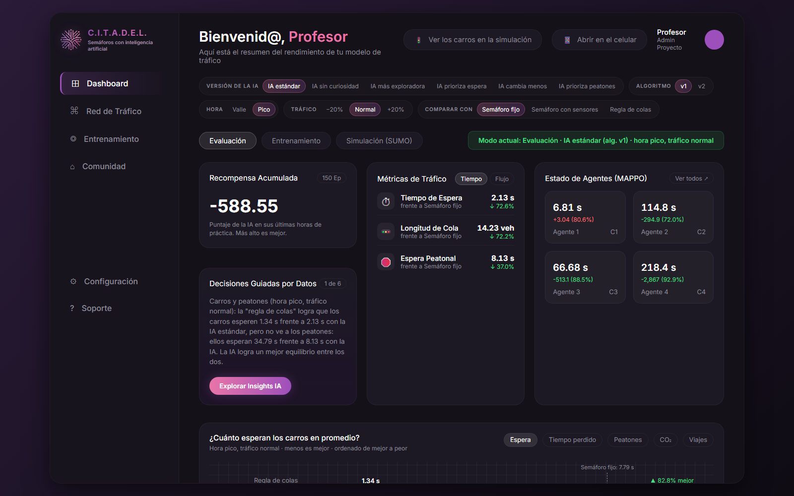

SUMO · sumo-rl · PyTorch
Ingeniería Eléctrica y Electrónica · Taller de Control
Control semafórico multiagente con RND-MAPPO
Aprendizaje por refuerzo para cuatro intersecciones de Bogotá simuladas en SUMO, con peatones y hora pico
Grupo: Tomás Castro · Andrés Felipe Barbosa · Mariana Vanoy · Santiago Sánchez
Profesor: Jorge Alfredo López Jiménez · noviembre de 2026
C.I.T.A.D.E.L. · RND-MAPPO
IELE · Taller de Control · Uniandes
2 / 15
Estructura
Agenda de la presentación
Formulación, método, resultados y análisis
01 El problema
Escenario de cuatro intersecciones con peatones; qué observa, qué decide y qué gana cada agente.
02 El método
RND-MAPPO, sus dos versiones y el protocolo de entrenamiento y evaluación.
03 Resultados
Aprendizaje, comparación con tres controladores, carros frente a peatones y demanda variable.
04 Análisis y cierre
Versión 1 frente a 2, papel de la curiosidad, dashboard y conclusiones.
C.I.T.A.D.E.L. · RND-MAPPO
IELE · Taller de Control · Uniandes
3 / 15
El problema
Descripción del escenario
Red vial de un sector de Bogotá importada de OpenStreetMap y simulada en SUMO
4 cruces
intersecciones semaforizadas, C1 a C4; peatones en C1 y C4
2 horas
valle y hora pico, una hora simulada cada una (720 decisiones de 5 s)
≈ 2.000 viajes/h
en hora pico (≈ 1.380 en valle)
| Parámetro | Valor |
|---|---|
| Simulador | SUMO 1.27.1 · sumo-rl 1.4.5 |
| Peatones | Pasos peatonales en C1 y C4 |
| Ventanas | Valle (0–3600 s) y hora pico (4400–8000 s) |
| Demanda | Rutas aleatorias + flujos; ×0,7 a ×1,3 al entrenar |
| Verde mínimo / máximo | 15 s / 60 s |
| Amarillo · teletransporte | 3 s · desactivado |
| Líneas base | Tiempo fijo, actuado (SUMO), max-pressure |
C.I.T.A.D.E.L. · RND-MAPPO
IELE · Taller de Control · Uniandes
4 / 15
Formulación
Formulación del problema de control
Juego estocástico parcialmente observable con un agente por intersección
| Elemento | Definición | Implementación |
|---|---|---|
| Agente i | Controlador de la intersección Ci, i = 1…4 | Un actor por intersección |
| Observación oi | Fase activa (one-hot), verde mínimo cumplido, densidad y cola por carril. En C1 y C4: peatones esperando y espera máxima | Observación de sumo-rl + peatones (TraCI) |
| Acción ai | Siguiente fase verde (15 s mín., 3 s amarillo, 60 s máx.) | Discreta; |Ai| = n.º de fases |
| Recompensa ri | Reducción de cola, espera de carros y espera de peatones; penalización por cambio de fase | Por intersección, cada Δt |
| Estado global s | Concatenación de las cuatro observaciones | Entrada del crítico |
| Horizonte | 720 pasos de 5 s · factor de descuento γ = 0,99 | 1 episodio = 1 h simulada |
C.I.T.A.D.E.L. · RND-MAPPO
IELE · Taller de Control · Uniandes
5 / 15
Arquitectura
MAPPO: entrenamiento centralizado, ejecución descentralizada
Actor πi(ai | oi)
oi → 128 → 64 → |Ai| · ReLU · softmax
Distribución sobre las fases. Cuatro actores independientes, porque |oi| y |Ai| cambian entre intersecciones.
Crítico V(s)
s → 256 → 128 → V · ReLU
Valor del estado global (las cuatro observaciones). Solo se usa en el entrenamiento.
Objetivo PPO
Pérdida recortada con ε = 0,2 y bono de entropía cH = 0,01.
Ventaja GAE
γ = 0,99 y λ = 0,95, con ventajas normalizadas por lote.
Ejecución
Cada controlador decide solo con oi: no necesita comunicarse con los demás.
C.I.T.A.D.E.L. · RND-MAPPO
IELE · Taller de Control · Uniandes
6 / 15
Recompensa
Recompensa extrínseca y exploración por RND
Random Network Distillation como bono de curiosidad con peso decreciente
R_ext = −(w1·ΔQ + w2·ΔW_veh + w3·ΔW_ped) − P·1[cambio de fase]
R_int = ‖ fθ(s′) − g(s′) ‖²
R_total = R_ext + λe·R_int, λe = max(0,01 ; 1 − e/E)
Término extrínseco
ΔQ y ΔW: cambio de la cola y de la espera entre pasos. w1 = w2 = 1, w3 = 2 (los peatones pesan el doble), P = 0,5.
Término intrínseco
g: red aleatoria fija; fθ: predictor entrenado para imitarla. El error es alto en estados poco visitados.
Decaimiento de λ
Lineal en el episodio e de E: exploración al inicio y optimización del tráfico al final.
C.I.T.A.D.E.L. · RND-MAPPO
IELE · Taller de Control · Uniandes
7 / 15
Arquitectura
Dos versiones del algoritmo
Mismo actor y misma recompensa; cambian el crítico y la normalización de la curiosidad
| Algoritmo 1 | Algoritmo 2 | |
|---|---|---|
| Crítico | Una salida V(s), actualizada por turnos con la recompensa de cada agente | Una salida Vi(s) por agente + normalización de valores (ValueNorm), un solo optimizador |
| Normalización de RND | Cada observación con su propia media | Media y desviación acumuladas; Rint normalizada por su desviación |
| Peso real de la curiosidad | ≈ 0,1 % de |Rext| (sin efecto) | ≈ 2 % de |Rext| (≈ 30 veces más) |
Por qué un valor por agente
Las recompensas de C2 y C3 son mucho mayores que las de C4: un único V(s) no puede ajustar los cuatro retornos a la vez.
Por qué renormalizar RND
Con la normalización original la curiosidad no tenía efecto: no se podía saber si RND servía o no.
C.I.T.A.D.E.L. · RND-MAPPO
IELE · Taller de Control · Uniandes
8 / 15
Entrenamiento
Configuración experimental
Hiperparámetros del entrenamiento y protocolo de evaluación
| Hiperparámetro | Valor |
|---|---|
| Episodios por corrida | 150 |
| Tasa de aprendizaje actor / crítico | 3·10⁻⁴ / 1·10⁻³ |
| Recorte PPO ε / entropía cH | 0,2 / 0,01 |
| Épocas PPO por episodio | 4 |
| γ / λGAE | 0,99 / 0,95 |
| Tasa de aprendizaje RND | 1·10⁻⁴ |
| Corridas | 2 versiones × 6 config. × 3 semillas = 36 |
Seis configuraciones
Base, sin curiosidad, más exploración (cH = 0,05), prioriza espera (w2 = 2), penaliza cambio (P = 2) y prioriza peatones (w3 = 5).
Evaluación pareada
Valle y pico × demanda 80, 100 y 120 % × 5 semillas de SUMO: todos los métodos ven el mismo tráfico.
1.170 episodios
36 políticas + 3 líneas base; prueba t pareada.
C.I.T.A.D.E.L. · RND-MAPPO
IELE · Taller de Control · Uniandes
9 / 15
Resultados
Curvas de aprendizaje
Episodios de hora pico de la configuración base · promedio de 3 semillas, en bloques de 10 episodios
━━ Algoritmo 1
━━ Algoritmo 2
╍╍ Tiempo fijo (evaluación)
23,1 → 2,4 s
algoritmo 1: primeros y últimos 10 episodios en pico
19,6 → 2,8 s
algoritmo 2: primeros y últimos 10 episodios en pico
≈ 30
episodio en que se supera al tiempo fijo
C.I.T.A.D.E.L. · RND-MAPPO
IELE · Taller de Control · Uniandes
10 / 15
Resultados
Desempeño en hora pico frente a las líneas base
Demanda nominal, 5 semillas pareadas · IA = configuración base, promedio de sus 3 semillas de entrenamiento
| Métrica | Tiempo fijo | Actuado | Max-pressure | IA · alg. 1 | IA · alg. 2 |
|---|---|---|---|---|---|
| Espera media de los carros (s) | 7,79 | 3,58 | 1,34 | 2,13 | 2,77 |
| Espera media de los peatones (s) | 12,9 | 14,7 | 34,8 | 8,1 | 9,4 |
| Tiempo perdido por viaje (s) | 172 | 100 | 99 | 117 | 116 |
| Espera por viaje, percentil 95 (s) | 243 | 111 | 67 | 73 | 84 |
| CO₂ emitido (kg/h) | 799 | 618 | 598 | 643 | 646 |
| Viajes completados | 1.805 | 2.041 | 2.045 | 2.021 | 2.022 |
| Viajes sin terminar | 150 | 37 | 33 | 55 | 52 |
| Cambios de fase | 916 | 984 | 498 | 682 | 650 |
−73 % / −64 %
espera de los carros frente al tiempo fijo (alg. 1 / alg. 2), p < 0,001
−37 % / −27 %
espera de los peatones; max-pressure la sube +170 %
+12 %
viajes completados en la hora pico frente al tiempo fijo
C.I.T.A.D.E.L. · RND-MAPPO
IELE · Taller de Control · Uniandes
11 / 15
Resultados
Carros frente a peatones, y sensibilidad a la demanda
Hora pico · abajo a la izquierda es mejor · puntos pequeños: las 36 políticas entrenadas
Espera de los carros (s) con otra demanda, sin reentrenar
| Demanda | Fijo | IA alg. 1 | IA alg. 2 |
|---|---|---|---|
| 80 % | 6,83 | 2,08 · −70 % | 2,28 · −67 % |
| 100 % | 7,79 | 2,13 · −73 % | 2,77 · −64 % |
| 120 % | 7,73 | 2,77 · −64 % | 3,04 · −61 % |
En valle
La mejora es menor: −43 % y −45 %, a la par del actuado (−47 %). La hora pico es donde el agente se diferencia.
C.I.T.A.D.E.L. · RND-MAPPO
IELE · Taller de Control · Uniandes
12 / 15
Análisis
Algoritmo 1 frente a 2, y ¿sirve la curiosidad?
18 políticas de cada versión, pareadas por configuración y semilla · promedio de las 3 demandas
| Métrica | Algoritmo 1 | Algoritmo 2 | p |
|---|---|---|---|
| Espera de los carros, pico (s) | 2,66 | 2,59 | 0,84 |
| Espera de los carros, valle (s) | 3,21 | 3,29 | 0,30 |
| Espera de los peatones, pico (s) | 8,31 | 9,52 | < 0,001 |
| Espera de los peatones, valle (s) | 7,67 | 8,51 | < 0,001 |
| Variación entre semillas, pico (s) | 0,66 | 0,21 | — |
| Episodios trancados (gridlock) | 1 | 0 | — |
RND no aporta
Sin curiosidad se obtiene lo mismo: espera en pico 2,28 vs. 2,33 s (alg. 1) y 2,57 vs. 2,70 s (alg. 2). Con la versión 2 la conclusión es sólida, porque ahí Rint sí pesa.
Lectura
La versión 2 es más correcta y estable, pero con 150 episodios no mejora el desempeño. Causa probable: con λ = 1 al inicio explora demasiado.
C.I.T.A.D.E.L. · RND-MAPPO
IELE · Taller de Control · Uniandes
13 / 15
Herramienta
Dashboard conectado a los resultados reales

Qué se elige
Versión de la IA (alg. 1 o 2), hora, tráfico y método de comparación, sobre las 36 corridas y los 1.170 episodios.
Simulación
Dos métodos lado a lado, animados con 10 min de hora pico grabados en SUMO.
Ábrelo en tu celular
Escanea el código con la cámara
santisan1205.github.io/Taller-Control/dashboard/
C.I.T.A.D.E.L. · RND-MAPPO
IELE · Taller de Control · Uniandes
14 / 15
Cierre
Conclusiones
01 · Desempeño
En hora pico la espera de los carros baja entre 64 y 73 % frente al tiempo fijo y se completan 12 % más viajes (p < 0,001).
02 · Carros y peatones
Es el único método que mejora las dos esperas. Max-pressure deja a los carros en 1,3 s, pero a los peatones en 35 s, contra 8–9 s con el agente.
03 · Robustez
Con 20 % más o menos demanda, sin reentrenar, la espera en pico sigue bajando más de 60 %.
04 · Método
El algoritmo 2 corrige el crítico y RND: es más estable y no se tranca, pero no mejora el desempeño. La curiosidad no aporta en este problema.
Trabajo futuro: λ inicial menor o más episodios; reducir el tiempo perdido por viaje (hoy mayor que con actuado y max-pressure); validar con conteos reales de tráfico.
Control semafórico multiagente con RND-MAPPO
Gracias. ¿Preguntas?
Tomás Castro · Andrés Felipe Barbosa · Mariana Vanoy · Santiago Sánchez
github.com/santisan1205/Taller-Control